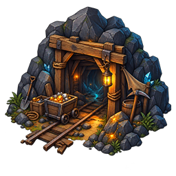

Séparer les lieux créés, leur position, leur visibilité et leur apparition en quête.
Comprendre ce que cela implique
Un lieu peut être placé sans être découvert ; à l’inverse, connaître son nom ne valide pas sa position. Le rôle, la visibilité et la durée de vie expliquent pourquoi une trace de quête ne se comporte pas comme un village permanent.
Le monde initial minimal comprend dix lieux obligatoires. Les autres définitions du catalogue ne sont pas automatiquement créées : une quête qui exige des lieux encore non raccordés peut rester indisponible même si sa fiche existe.

Dans cet article
- Maintenance des tests des lieux partagés
- Visibilité des lieux existants
- Placement indépendant de la nature du lieu
- Plan idéal enregistré
- Distance minimale entre lieux
- Rayon économique de la capitale
- Lieux des prospecteurs perdus
- Vérification des fixtures de carte
- Contrat d’apparition
- Placements différés choisis en préparation (11 octobre 2026)
- Atelier visuel du monde
Détails de référence
Texte de référence mis en forme et conservé dans l’historique de cet article. Les paragraphes datés peuvent décrire une évolution ou une étape antérieure.
Maintenance des tests des lieux partagés
Les villages fournisseurs sont les quatre villages économiques existants : Aurive, Ferrières, Boisclair et Rochevive, identifiés par capital-resource-{gold,iron,wood,stone}-village.
Le module historique des Greniers réutilise Aurive depuis le scénario principal. Ses tests isolés déclarent explicitement cet emplacement partagé ; le test de composition vérifie qu’il n’est pas dupliqué. Les contrôles de réquisition et de parité GPS/simulation restent présents. Les trois parcours historiques d’évacuation, les trois parcours du messager et le briefing historique du maréchal ont été retirés des tests : ils dépendaient de lieux retirés du monde initial et du système de quêtes désactivé. Les tests des services génériques (chariots, échéances, démantèlement et évaluation) sont conservés. Ce nettoyage ne réactive ni ne supprime de fonctionnalité dans le moteur.
data/scenarios/chaos.json porte désormais mapDefinition, conservée par Scenario.toJSON() et vérifiée lors de la construction du moteur, y compris depuis un instantané serveur.
requiredLocationSlotIds désigne le minimum obligatoire : capitale, village et mine produisant de l’or. Ces identifiants référencent locationSlots ; les bindings établissent leur correspondance avec les lieux du catalogue. Le monde initial est maintenant limité par initialLocationSlotIds à dix lieux : la capitale, Aurive, Ferrières, Boisclair et Rochevive, quatre exploitations (or, fer, bois, pierre), et le fort de Rochegarde (supply-fort). Ces dix slots sont tous obligatoires. Aucun autre lieu allié, neutre ou ennemi n’est créé au départ, même si sa quête est retenue dans la préparation. Retirer Ravitaillement ne retire pas Rochegarde ni les villages du monde initial.
La sélection s’applique à la création du moteur en GPS et en simulation, avant le placement et la génération économique. Les définitions supplémentaires restent dans les catalogues pour de futurs ajouts par les quêtes ; elles ne sont pas simplement cachées dans le monde initial. Les missions nécessitant ces lieux supplémentaires ne sont pas disponibles tant que leur création n’est pas raccordée. La recharge d’une sauvegarde existante ne purge pas ses lieux.
Le setup ne crée plus de copies selon la densité, de lieux supplémentaires réservés à la simulation, de GA génériques ou de zones de prospection par défaut. Les placements du scénario et les apparitions déclenchées par les quêtes restent actifs. Les sauvegardes existantes ne sont pas purgées.
Visibilité des lieux existants
La fiche sépare désormais le rôle (world.role), la visibilité (world.visibility) et la durée de vie (world.lifetime) du placement.
| Cas | Rôle | Visibilité | Durée de vie |
|---|---|---|---|
| Capitale, point de départ | starting-point | known | persistent |
| Monde connu : productions, villages, forts, camps | world | known | persistent |
| Lieux durables à découvrir | world | discoverable | persistent |
| Traces, objets, personnages de quête représentés par un lieu | quest | quest | ephemeral |
Le monde connu est affiché dès placement. Un lieu à découvrir peut déjà avoir des coordonnées : le serveur le découvre à portée de détection du héros, ou une quête le révèle explicitement. Seul ce joueur l’ajoute alors à sa carte ; il le conserve en s’éloignant. La connaissance ne valide pas un placement.
Les éléments éphémères attendent leur déclencheur appearance puis sont retirés pour les participants concernés après l’action de world.removal.actionId ou à la fin de world.removal.questId. Les données de définition et coordonnées peuvent être réservées à la création de la carte ; ce sont des modèles avant activation, pas des lieux de quête visibles et interactifs. Le moteur conserve leur état consommé pour les sauvegardes sans supprimer les bindings du scénario. La capitale doit être durable, connue et placée dès la création de la carte. Les distances et permissions d’interaction restent inchangées.
Sans world, les anciennes fiches et sauvegardes gardent la règle historique : lieu placé visible, sauf s’il attend une règle appearance.
Un emplacement de scénario dont le statut n’est pas placed désigne encore un futur lieu : il reste masqué jusqu’à validation de son placement. Les lieux détruits ou retirés (dismissed) sont également masqués. La détection des héros, GA, traces et zones de prospection suit ses règles existantes.
Placement indépendant de la nature du lieu
Les stratégies serveur disponibles sont random (tirage parmi des candidats autorisés à la création), fixed (position configurée), distance (trajet puis validation), et area-relative (distance et direction depuis un autre lieu). Toutes respectent la zone autorisée et l’écart minimal entre lieux permanents. Un lieu durable inconnu peut donc être fixé au départ, et un élément de quête peut avoir un emplacement relatif réservé tout en restant inactif. Ces stratégies ne sont pas encore toutes proposées par le formulaire de configuration.
L’exploration préalable reste à implémenter et comporte deux transitions :
Le serveur valide une zone accessible après reconnaissance et conserve ses coordonnées comme zone confirmée disponible, sans identité de lieu. Une quête de repérage peut présenter cette confirmation aux joueurs.
Plus tard, le serveur choisit cette zone et l’alloue à un lieu du scénario. Il revérifie les exclusions et l’espacement, puis applique la visibilité et le cycle de vie de ce lieu. Une zone ne peut pas être allouée deux fois.
Confirmer une zone ne crée donc pas une mine, et allouer une zone ne la révèle pas forcément. La réserve des zones confirmées, l’allocation, les commandes et leur interface ne sont pas encore disponibles. Les constructions réalisées par les joueurs sont hors du périmètre de ce contrat de carte.
Plan idéal enregistré
La capitale est souhaitée au centre. Les couronnes ordonnées décrivent :
Ressources or, fer, bois et pierre, accompagnées de villages.
Un fort et un camp dans chacune des quatre directions cardinales.
Des forts, camps et ressources ennemis, avec une densité de GA ennemis supérieure.
Un fort à reconstruire, avec un village et les ressources de chaque côté pour deux équipes.
Les quantités, ratios de rayons et multiplicateurs sont des valeurs initiales modifiables dans la fiche. Ils décrivent un objectif de génération, pas encore une génération exécutée. Les ratios devront être appliqués à la géométrie réelle de la playarea par le futur générateur serveur.
Restent à implémenter : réglage personnalisé de l’espacement, adaptation à la forme et à la capacité du terrain, génération des couronnes, répartition des GA, symétrie des équipes, reconstruction du fort et choix des modes de création. Les scénarios historiques sans mapDefinition restent compatibles.
Distance minimale entre lieux
La distance entre les centres de deux lieux permanents doit être au moins égale à la somme de leurs rayons normaux d’interaction, plus un mètre en GPS ou une unité sur la carte fictive. Les rayons GPS tiennent compte de la politique de portée et de la surface ; les bonus personnels du héros ne modifient pas cet écart. Deux lieux de rayon 25 mètres doivent donc être espacés d’au moins 51 mètres.
La règle s’applique aux placements automatiques, aux positions fixes configurées, aux déplacements validés par le serveur, aux lieux révélés après un trajet et au réseau économique de la capitale. Les nouveaux lieux permanents créés par le moteur de quêtes et le camp de la mission collective respectent aussi cet écart. Les positions du catalogue peuvent être adaptées lors de la génération. Si aucun candidat ne respecte l’écart, le placement est refusé sans réduire le seuil. Une économie placée en groupe est validée avant tout déplacement. Les indices portant le rôle clue réservent aussi leur espace, même cachés : la marge ajoutée aux rayons est de 20 mètres en GPS ou 8 unités sur la carte fictive. Une position prédéfinie trop proche est recalculée pendant la préparation. Les lieux en attente de placement, les lieux détruits, les autres marqueurs de quête ou d’événement et les convois mobiles ne bloquent pas le placement. Les anciennes sauvegardes ne sont pas déplacées automatiquement pour appliquer cette règle.
Rayon économique de la capitale
Le placement des exploitations de la capitale et la sélection des destinations de ses convois partagent désormais un rayon calculé à partir de la surface utile de la playarea : min(600 m, 0.5 × sqrt(surface / π)) par défaut. Les zones exclues sont soustraites. La simulation applique la même proportion à sa surface plane, en unités de carte ; le plafond en mètres concerne le GPS.
La fiche règle la proportion avec worldState.flags.capitalAi.resourceRadiusRatio et le plafond GPS avec resourceRadiusMaximumMeters. Les anciens paramètres de rayon fixe ne sont plus utilisés. Ce calcul ne tient pas encore compte des passages étroits ni de la distance de marche réelle.
Lieux des prospecteurs perdus
Le camp de Valgrise utilise désormais un placement relatif à la capitale, matérialisé dès la préparation ; le nouveau moteur n’utilise pas le placement historique après une distance de marche. Deux marqueurs de type quest, prospectors-trace-1 et prospectors-trace-2, sont aussi placés par le scénario. La carte fictive fournit leurs positions préférées dans simulation-config.js, adaptées si nécessaire pour respecter l’espacement. Ils restent soumis aux mêmes commandes de présence et d’examen serveur. Les éléments éphémères restent masqués jusqu’à l’action précédente accomplie : les deux indices et le champ de bataille. Le camp est connu dès le départ ; la mine durable peut être découverte par proximité ou révélée par la fouille. Ces découvertes ne valident pas les actions de quête. Les anciennes sauvegardes ne créent pas ces nouveaux marqueurs automatiquement.
Vérification des fixtures de carte
Les tests de présentation et de projection réseau distinguent les lieux placés, visibles même sans découverte préalable, des emplacements encore en attente, qui restent absents de la vue du joueur. Une suppression retire aussi leurs liens et placements. La préparation désactive le brouillard ; en jeu, son réglage reste indépendant de la visibilité des lieux placés.
Les fixtures de dialogue qui chargent les catalogues GPS utilisent une zone GPS autorisée et la position réelle de la capitale. Un test réseau à deux clients configure explicitement deux places avant l’arrivée du second joueur, car une nouvelle salle est limitée par défaut à un joueur. Ces corrections de tests ne modifient ni les permissions, ni les distances, ni les règles de jeu.
Contrat d’apparition
La position et le statut placed n’impliquent pas l’apparition d’un lieu soumis à appearance. Le contrat accepte immediate, QuestAccepted avec questId, et ActionCompleted avec questId et actionId. La règle est validée et sérialisée par Scenario ; les références d’action sont vérifiées par le service serveur lorsque la quête est disponible. Le serveur conserve les participants ayant débloqué le lieu et filtre carte, présence et projection pour chaque joueur. Voir missing-prospectors.md pour un exemple. La préparation valide les positions sans faire apparaître prématurément les lieux conditionnels.
Placements différés choisis en préparation (11 octobre 2026)
Les overrides player-walk et validated-cell produisent un placement player-pending, sans position officielle. player-walk accepte walkingDistanceMeters (300 par défaut, 10 à 10 000). Le point de départ ne peut pas utiliser ces stratégies. Les options du catalogue les excluent aussi des lieux capital-economy. Les règles d’apparition du scénario restent appliquées ; une visibilité « à découvrir » ne bloque pas la participation au placement, mais le placement ne révèle pas automatiquement le lieu à tous. Le service serveur de placement place atomiquement le lieu après contrôle de la zone et de l’espacement, puis son état devient placed. Le mode validated-cell consomme une case validée par un repérage de l’équipe et place le lieu au centre. Les cases utilisent le quadrillage borné du terrain (au plus 48 × 48), avec centre et deux coins à l’intérieur du terrain sans exclusion.
Atelier visuel du monde
L’atelier à /editor/ propose Monde & carte : lieux logiques, placements GPS, play area et exclusions. Il réutilise les validations serveur de zone et d’espacement et exporte des définitions à intégrer aux catalogues et bindings. Aucune règle de partie ne change. Voir le guide de l’atelier.